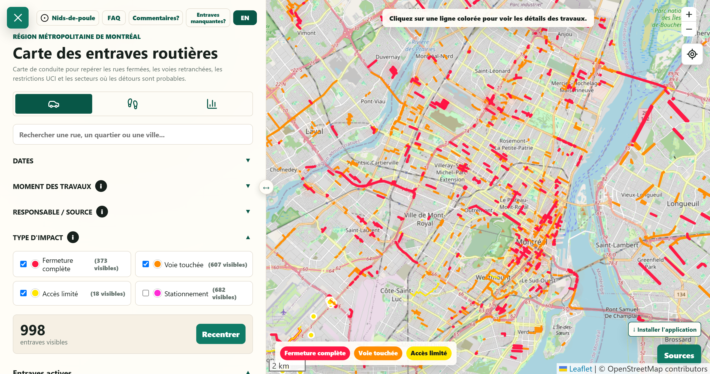
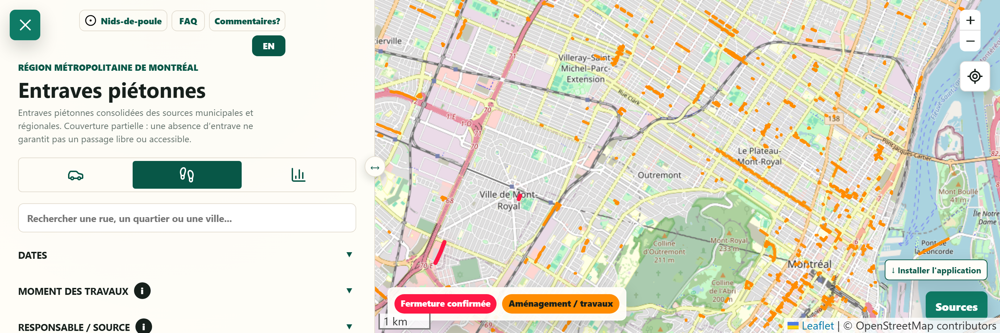
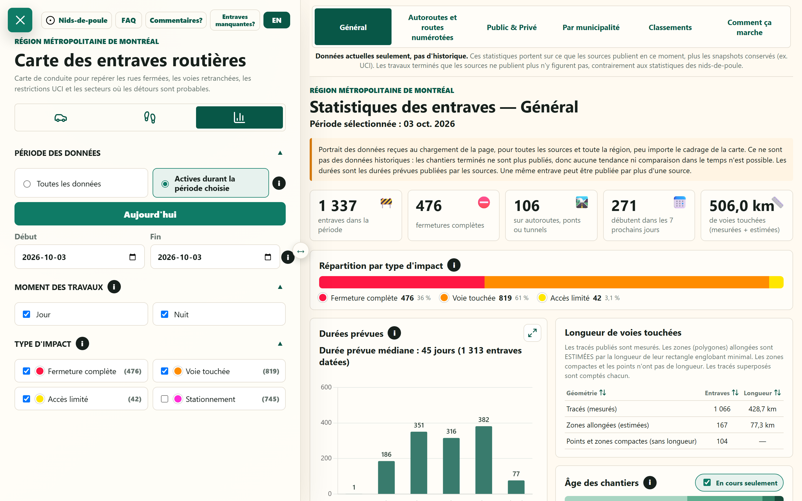
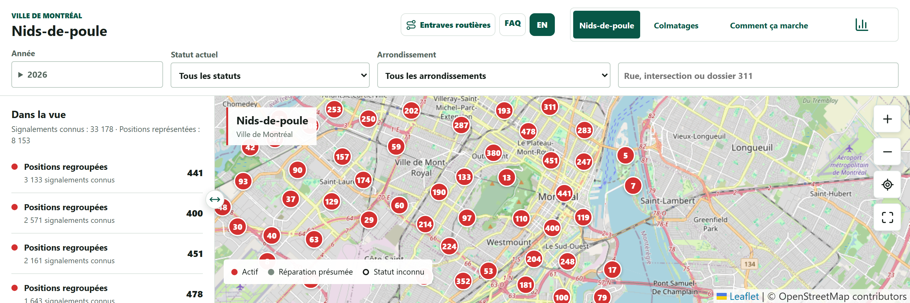
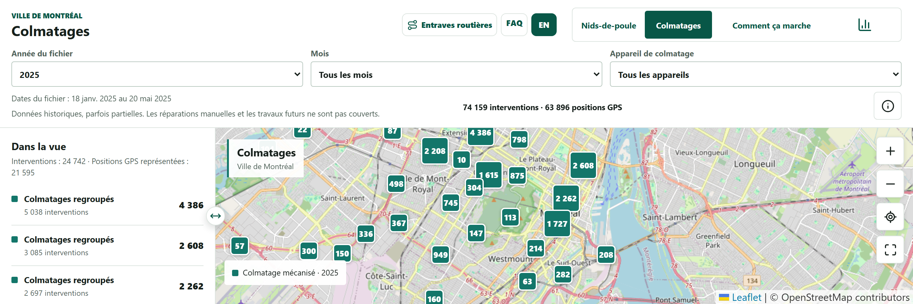
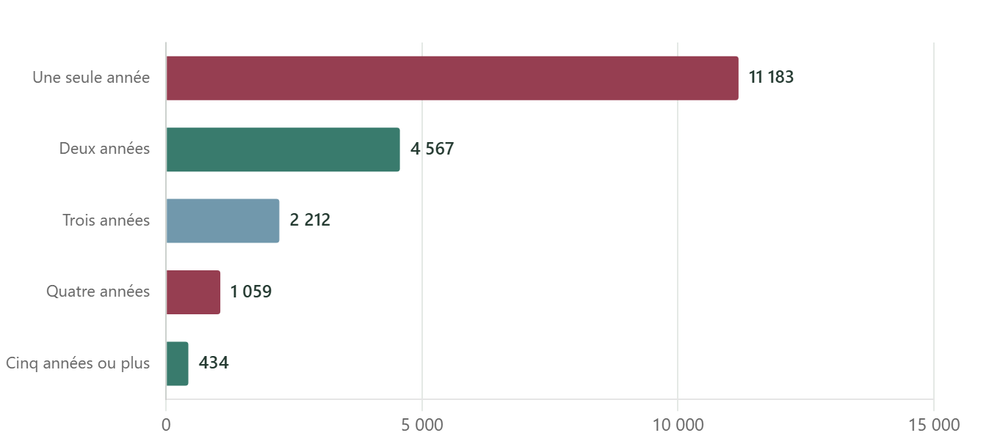

C'EST DÉJÀ L'ENFERDossier de presse · 3 octobre 2026
Données ouvertes et renseignements publics
C'est déjà l'enfer
Des données publiques. Des rues plus compréhensibles.
Une initiative citoyenne indépendante pour consulter les entraves du Grand Montréal et explorer les signalements de nids-de-poule et les colmatages de Montréal.

La carte automobile rassemble les restrictions publiées. Capture du 3 octobre 2026; le contenu évolue selon les sources. Fond de carte : OpenStreetMap.
Créé par Shelsea Saint-Fleur, le site réunit des informations dispersées dans des cartes, des bilans et des statistiques. Il aide à comprendre ce qui est annoncé et à examiner les données disponibles, sans se substituer aux autorités ni à une inspection sur place.
5 sept.
Lancement en 2026, selon la créatrice
FR / EN
Consultation gratuite, sans compte
19
Portraits d'arrondissement pour les nids-de-poule à Montréal
C'EST DÉJÀ L'ENFERLa démarche
Un projet porté par Shelsea Saint-Fleur
Rendre utile une information qui existe déjà.
Savoir où une rue ferme, quand une restriction s'applique et quelle source consulter peut demander de parcourir plusieurs sites. C'est de cette difficulté qu'est né le projet.
Shelsea Saint-Fleur est diplômée d'un baccalauréat en génie logiciel et spécialisée dans les données. Elle a créé C'est déjà l'enfer pendant son temps libre pour rendre l'information routière plus facile à consulter. Son travail consiste à repérer les sources, organiser leurs renseignements et en expliquer les limites.
Le nom fait écho à la frustration des déplacements compliqués. L'objectif est concret : réunir des renseignements utiles, permettre de revenir à leur origine et faciliter leur lecture. Le projet demeure personnel et indépendant; il n'est pas exploité ni approuvé par les municipalités dont il utilise les données.
Repérer. Rassembler. Structurer. Expliquer.
Au-delà de la carte
Les sources ne publient pas toutes les mêmes champs, les mêmes formats ou les mêmes périodes. Le travail de mise en cohérence fait partie de la valeur du site.
Des retours qui orientent le travail
Les commentaires aident à repérer les informations manquantes et les obstacles d'utilisation. Le mode lecteur d'écran a notamment évolué à partir de retours avec VoiceOver sur iPhone.
5 septembre 2026Lancement du projet, date communiquée par sa créatrice.
Septembre 2026Première couverture médiatique, dont une entrevue à QUB avec Mario Dumont sur la première version du site.
Édition actuelleCartes Auto et Piétons, statistiques routières, cartes et analyses des nids-de-poule et des colmatages, portraits des arrondissements.
6 715
visiteurs uniques annoncés Du 5 septembre au 1er octobre 2026. Chiffre communiqué par Shelsea Saint-Fleur, non audité indépendamment. Il ne s'agit ni d'un nombre de visites ni d'un nombre de trajets.
C'EST DÉJÀ L'ENFEREntraves · Grand Montréal
Deux cartes, des impacts distincts
Une rue fermée aux voitures n'est pas toujours fermée à pied.
Les modes Auto et Piétons distinguent les restrictions selon les personnes concernées. Une fermeture de voie automobile n'est pas automatiquement une fermeture de trottoir.
Auto
Rues, autoroutes, ponts, viaducs et accès : la carte différencie les fermetures complètes, les voies touchées, les accès limités et les restrictions de stationnement.
La couverture vise le Grand Montréal, notamment Montréal, Laval, Longueuil et des municipalités des couronnes, selon les renseignements disponibles.
Piétons
Trottoirs, parcs, sentiers et certaines pistes cyclables : la carte distingue les fermetures documentées des aménagements ou travaux annoncés.
Les restrictions propres aux cyclistes sont identifiées comme telles. La couverture ne constitue pas un inventaire exhaustif des obstacles.

Carte Piétons, capture du 3 octobre 2026. Les couleurs distinguent fermeture confirmée et aménagement ou travaux. La géométrie ne garantit pas le côté du trottoir ni l'accessibilité du passage. Fond : OpenStreetMap.
Préparer une consultation, pas calculer un trajet
Une recherche et des filtres de dates, de moment des travaux et d'impact permettent d'examiner un secteur. Chaque fiche conserve les renseignements disponibles : localisation, dates, horaires, direction, responsable et lien vers la source. La liste suit la zone visible de la carte.
Un affichage adapté aux lecteurs d'écran. Sur téléphone et tablette, le mode dédié de la carte Piétons rend la recherche et la liste plus directement accessibles. Ce n'est ni un guidage vocal, ni un calculateur d'itinéraires accessibles, ni une certification d'accessibilité.
Le site complète la consultation des avis officiels et les outils de navigation habituels. Une absence d'entrave affichée ne garantit jamais un passage libre. La signalisation sur place demeure prioritaire.
C'EST DÉJÀ L'ENFERStatistiques · Entraves routières
Passer des fiches au portrait d'ensemble
Quels axes sont touchés? Quels travaux sont annoncés?
Les statistiques routières utilisent les mêmes entraves que la carte pour explorer leur répartition dans l'ensemble de la région chargée, indépendamment du cadrage.

Exemple de la vue Général, le 3 octobre 2026, avec le filtre des entraves actives pendant la période choisie. Les chiffres dépendent des sources reçues et des filtres; ils ne constituent pas un recensement de chantiers uniques.
Lire les impacts et les durées
Répartition des restrictions, durées prévues publiées, ancienneté depuis la date de début et débuts ou fins annoncés dans les sept prochains jours.
Explorer les axes
Autoroutes, routes numérotées, ponts et tunnels concernés, avec les directions lorsqu'elles sont publiées.
Examiner les territoires
Portraits par municipalité ou arrondissement et classements de rues selon les informations disponibles.
Comprendre les responsables
Les sections Public & Privé distinguent qui réalise les travaux et pour le compte de qui, lorsque la source permet de le déterminer.
Retrouver les chiffres
Filtres, tris, tableaux associés aux graphiques et explications méthodologiques permettent d'examiner les résultats.
Garder la source à portée
Les liens d'origine permettent de revenir aux avis et aux renseignements publiés.
Un portrait des données chargées, pas une tendance historique. Les sources retirent généralement les travaux terminés. Une entrée peut représenter un tronçon ou un impact; un chantier peut produire plusieurs entrées, voire apparaître dans plusieurs sources. Les classements reflètent aussi les différences de couverture et de publication, pas une note de performance municipale.
C'EST DÉJÀ L'ENFERNids-de-poule et colmatages · Montréal
Deux ensembles de données complémentaires
Ce qui a été signalé. Ce qui a été enregistré.
Une section distincte permet d'explorer les demandes 311 liées aux nids-de-poule et les traces de colmatage mécanisé publiées par la Ville de Montréal.
La carte des signalements
Recherche par rue, intersection ou identifiant 311, sélection d'années et d'arrondissement, historique d'un emplacement public : la carte permet de retrouver les demandes et les colmatages enregistrés à proximité.

Nids-de-poule, années d'activité : 2026, tous les statuts. Capture du 3 octobre 2026. Les groupes comptent des positions publiques distinctes, pas des trous uniques. Fond : OpenStreetMap.
La carte des colmatages
Les interventions GPS publiées s'explorent par fichier annuel, mois et appareil. Les compteurs distinguent les interventions des positions; les fiches conservent les dates et les identifiants disponibles.

Colmatages, fichier 2025 : événements du 18 janvier au 20 mai 2025. Capture du 3 octobre 2026. Ce ne sont pas les réparations de 2026. Fond : OpenStreetMap.
Un lien possible, pas une confirmation. Une intervention dans un rayon de 25 m d'une position 311 peut concerner un autre trou. « Réparation présumée » est une estimation du site, distincte du statut administratif du dossier. Les positions 311 sont approximatives.
C'EST DÉJÀ L'ENFERStatistiques · Nids-de-poule et colmatages
Bilans, graphiques et portraits territoriaux
Où les signalements se répètent-ils?
Ce volet ne se limite pas à des marqueurs : il permet une lecture historique et géographique des signalements et des interventions disponibles.
Des bilans et des classements
Volumes annuels, rues et emplacements les plus signalés, colmatages recensés par rue et données par appareil. Les demandes d'information restent séparées des signalements.
Six analyses
Volumes annuels, persistance sur plusieurs années, concentration des demandes, nouveaux signalements après colmatage présumé, demandes répétées sans colmatage recensé et récurrence par arrondissement.

Persistance des signalements, période 2022-2026 : 8 272 emplacements sur 19 455 ont reçu des signalements dans au moins deux années distinctes. Capture du 3 octobre 2026; l'année 2026 est partielle. Un emplacement public peut correspondre à plusieurs trous.
Un portrait pour chacun des 19 arrondissements
Indicateurs, graphiques, tableaux de rues et d'emplacements, recherche et liens vers la carte donnent une lecture locale. La comparaison avec le reste de Montréal exclut l'arrondissement sélectionné du groupe de comparaison.
La période récente couvre 2022-2026; une seconde vue permet d'explorer l'ensemble de l'historique disponible. Ces portraits décrivent des emplacements signalés, pas l'état de toutes les rues ni l'efficacité des équipes municipales.
Une absence de trace n'est pas une preuve de non-réparation. Le corpus de colmatage mécanisé ne fournit ni les réparations manuelles ni les interventions des arrondissements. Un nouveau signalement près d'un colmatage ne prouve pas que la réparation a échoué ou que le même trou est revenu.
C'EST DÉJÀ L'ENFERSources et méthode
La provenance fait partie de l'information
Montrer les données. Expliquer leurs limites.
La plateforme utilise des données ouvertes et des renseignements publics, notamment ceux de Montréal, du ministère des Transports et de la Mobilité durable, de Laval, de Longueuil et d'autres organismes municipaux ou régionaux. Les déclarations citoyennes et les compléments non officiels sont distingués des avis officiels.
Ensemble
Périmètre et actualisation
Entraves automobiles
Grand Montréal, couverture variable. Des flux sont demandés à l'ouverture ou à l'actualisation; d'autres informations proviennent de copies datées. La fraîcheur dépend de chaque source.
Entraves piétonnes
Portrait consolidé de sources municipales et régionales, actualisé séparément. Ce n'est pas un flux en temps réel ni un relevé exhaustif d'accessibilité.
Demandes 311
Montréal, fichiers de 2014 à 2026. Les demandes d'information sont séparées des signalements dans les statistiques. Les périodes et la qualité des coordonnées varient.
Colmatage mécanisé
Fichiers de 2016 à 2025, parfois partiels. Derniers événements disponibles : 20 mai 2025. Réparations manuelles et interventions des arrondissements non fournies; coordonnées 2021 non exploitables dans le traitement actuel.
Une entrée n'est pas un chantier
Les statistiques routières comptent des entrées publiées : tronçons, zones ou impacts. Les chevauchements et différences de publication limitent les comparaisons entre territoires.
Une durée prévue n'est pas un délai constaté
Les dates annoncées peuvent changer. Les longueurs de voies touchées sont des mesures ou estimations géométriques, pas une mesure de congestion.
Un dossier n'est pas un trou unique
Les positions publiques 311 sont déplacées sur des tronçons. Une clôture administrative ne confirme pas une réparation. Le rayon de comparaison de 25 m est un choix technique, non une validation terrain.
Une date de fichier n'est pas une date de travaux
Une vérification ou publication récente peut porter sur des événements anciens. Les dates des signalements et des colmatages restent distinctes.
Consulter avant de se déplacer. Le site ne garantit pas qu'une rue est ouverte ni qu'un passage est accessible. Les avis officiels, les consignes des autorités et la signalisation demeurent prioritaires.
C'EST DÉJÀ L'ENFERPour les médias
Entrevues, démonstrations et renseignements
De l'information dispersée à une consultation commune.
Le projet peut être abordé par son utilité quotidienne, par le travail sur les données publiques ou par l'expérience d'une créatrice qui fait évoluer son outil avec les retours d'utilisation.
Shelsea Saint-Fleur
Créatrice de C'est déjà l'enfer · Spécialiste des données
Consulter les entraves annoncées dans un secteur à une date donnée et retrouver l'avis d'origine.
Examiner une répartition d'impacts ou une durée prévue dans les statistiques routières.
Explorer les signalements répétés d'un arrondissement et comprendre les limites des liens avec le colmatage.
Première couverture médiatique
QUB, entrevue avec Mario Dumont : présentation de la première version du projet, en septembre 2026. Cette référence ne décrit pas l'ensemble des fonctions de l'édition actuelle.
Illustrations. Captures du site réalisées le 3 octobre 2026. Pour toute reprise, conserver le contexte, la date, les limites de lecture et les crédits cartographiques. Fonds de carte : OpenStreetMap et ses contributeurs. Les données et fonds restent soumis aux conditions de leurs éditeurs.
Dossier de presse, édition du 3 octobre 2026. Les fonctionnalités, données et disponibilités des sources sont susceptibles d'évoluer. Le site peut être ajouté à l'écran d'accueil depuis un navigateur compatible; une connexion Internet reste nécessaire.